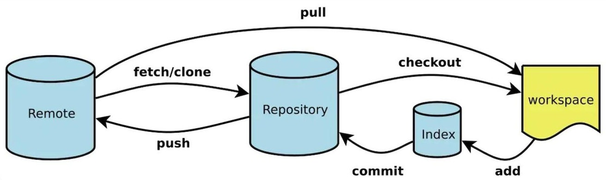
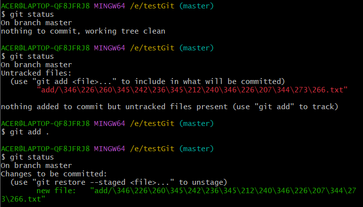
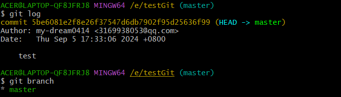
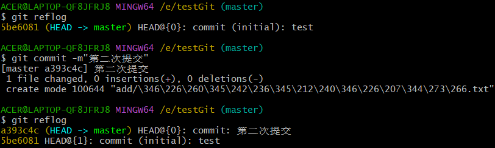
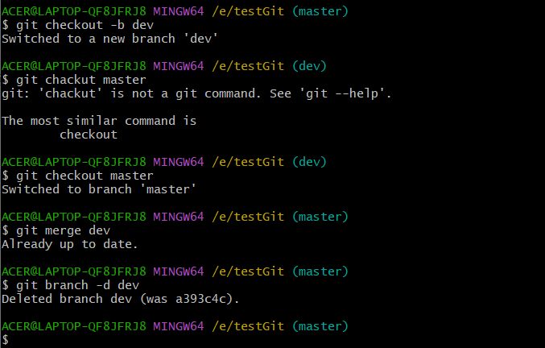

1.Git的操作流程
（1）创建一个 Git 仓库，用于存储代码和版本历史记录。
（2）在本地使用git remote与与远程仓库建立连接
（3）通过 git add 命令将更改的文件添加到 Git 的暂存区中。
（4）通过 git commit 命令将暂存区中的更改提交到 Git 仓库中，并生成一个新的版本号
（5）如果需要撤销某个提交，可以使用 git revert 命令来创建一个新的提交，该提交将会抵消先前的提交效果。
（6）如果需要合并不同分支的代码，可以使用 git merge 命令进行合并。
（7）如果需要查看代码的历史提交记录，可以使用 git log 命令来获取详细信息。
（8）如果需要将代码推送到远程仓库，可以使用 git push 命令将本地代码推送到远程仓库。
（9）如果需要从远程仓库中获取代码，可以使用 git pull 命令将远程代码拉取到本地。

其中：workspace是工作区（本地文件），index是暂存区，repository是仓库区（本地仓库），remote是远程仓库
工作区：指您电脑文件系统上用于修改文件的目录。
暂存区：一个中间状态，它充当了您提交更改的缓冲区。在Git中，您必须明确地将文件添加到暂存区，然后才能将其提交到版本库中。这样做的好处是，您可以对每个更改进行精细控制，并确保只提交需要保存的更改。
版本库：包含Git存储库的所有历史记录和元数据。它是Git存储库的核心组成部分，是由Git自动维护的。
2.常规操作
（1）初始化Git仓库
1 | git init |
（2）git remote相关操作
1 | git remote add <name> <url> name:一般是origin |
（3）git add相关操作（一般是使用前两种）
1 | git add . 一次性将所有变更添加到暂存区 |
（4）其他
1 | git commit -m "Initial commit" 提交暂存区中的变更到本地仓库，并添加一个描述信息 |


3.版本回退
（1）查看所有历史版本信息
1 | git reflog |
（2）强制回滚到之前版本
1 | git reset --hard 版本号 将需回滚的版本回到工作区（工作区未修改的区域） |
（3）撤销当前回滚至之前版本
1 | git reset --sort 版本号 |
（4）暂存区的撤销，将暂存区里的文件或文件夹移到工作区
1 | git reset 文件名 回滚至工作区的 文件未修改时状态 |
（5）工作区的撤销，将工作区里的修改状态移到工作区未修改状态
1 | git checkout 文件名 |

4.创建与合并分支
（1）创建一个新的分支
1 | git branch <branch_name> |
（2） 切换到分支
1 | git branch <branch_name> |
（3）创建并立即切换到该分支
1 | git branch -b <branch_name> |
（4）合并分支可以使用以下命令
1 | git merge <branch_name> |

5.推送分支
（1）推送当前分支到远程仓库，并与远程分支关联：
1 | git push -u origin <branch-name> |
（2）推送当前分支到远程仓库，并与远程分支合并：
1 | git push origin <branch-name> |
（3）强制推送当前分支到远程仓库：
1 | git push -f origin <branch-name> |
（4）删除远程分支：
1 | git push origin :<branch-name> |
在推送分支时，通常会遇到冲突等问题。如果发生冲突，需要先解决冲突，然后再进行推送。
6.下拉代码
（1）两种方式
1 | git clone http://xxx.git 暴力 |
（2）git pull的用法：直接使用 git pull 可能会遇到各种问题，特别是当本地分支有未提交的更改时。在这种情况下，git pull 可能会因为合并冲突而失败。
1）本地有未提交的更改: 你有两个选项：
- 使用
git stash临时保存本地更改，然后执行git pull，最后用git stash apply恢复更改。 - 使用
git pull --rebase，这样 Git 会先把你的更改暂存起来，然后尝试应用到拉取下来的最新代码上。
- 使用
2）指定合并策略: 你可以通过 --strategy 参数来指定合并策略，例如 git pull --strategy=ours。
3）只拉取不合并: 如果你只想拉取最新代码但不进行合并，可以使用 git fetch。